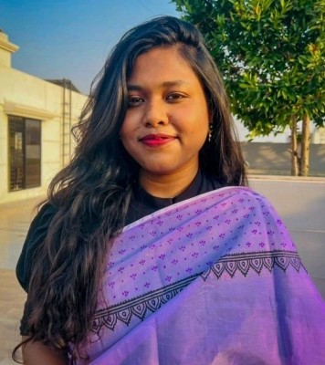
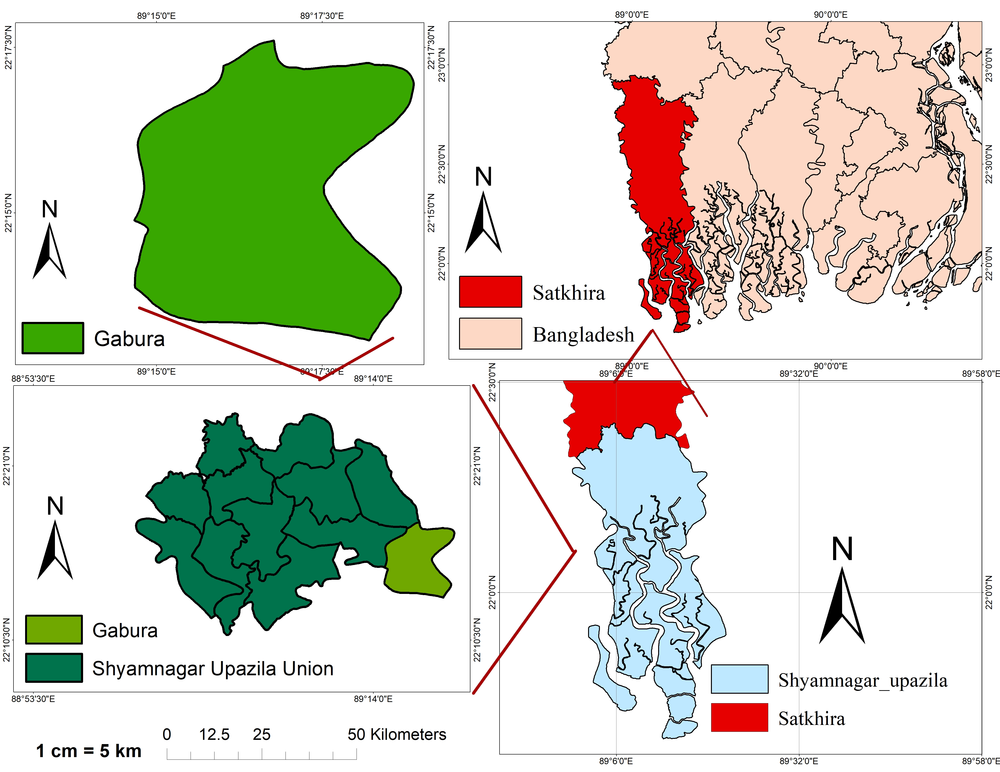
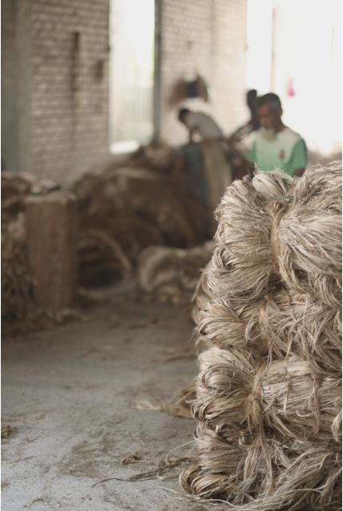

Urban and Regional Planning Graduate | Masters Student | Research & Academic Focus
Welcome to my portfolio! I am a motivated professional with a background in Urban and Regional Planning, equipped with strong research and analytical skills. I am quick to learn, open to new ideas, and work well in collaborative team environments. I am passionate about pursuing a career in academia and research, where I aim to make meaningful contributions through innovative studies and sustainable planning solutions that address contemporary challenges.
A comprehensive study focusing on the female demographic in the cyclone-prone Gabura union, investigating socio-economic and environmental impacts.

Integrating PCA and AHP methodologies to assess vulnerability and resilience in coastal communities.

International collaboration project focused on sustainable materials and life cycle assessment of jute products.
Research and academic orientation toward sustainable urban development, environmental planning, and community resilience.
Ready to collaborate or discuss research opportunities? Let's connect!